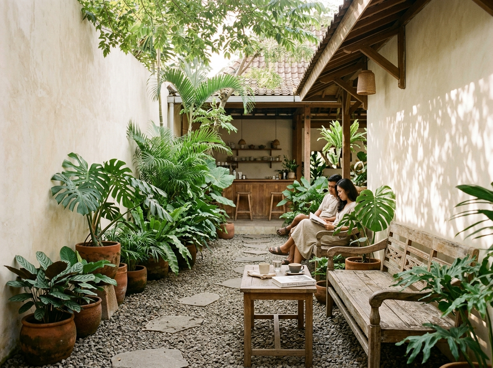
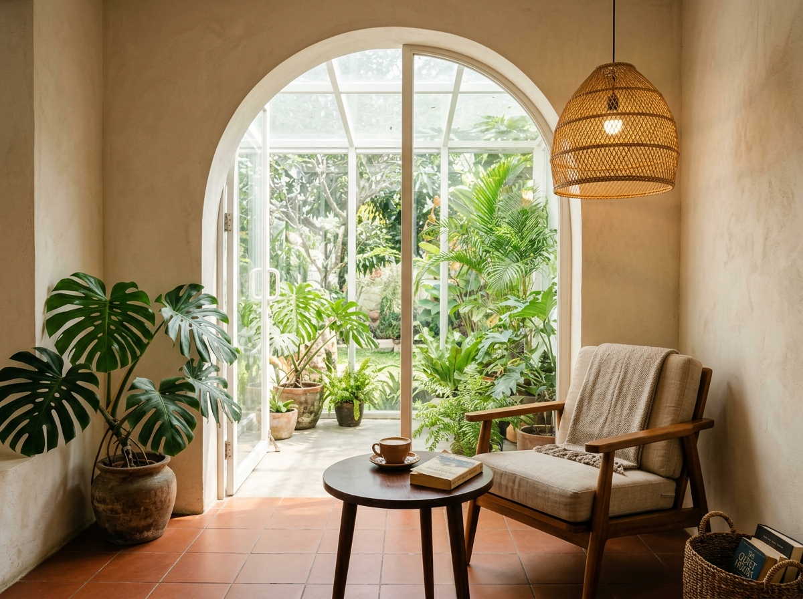
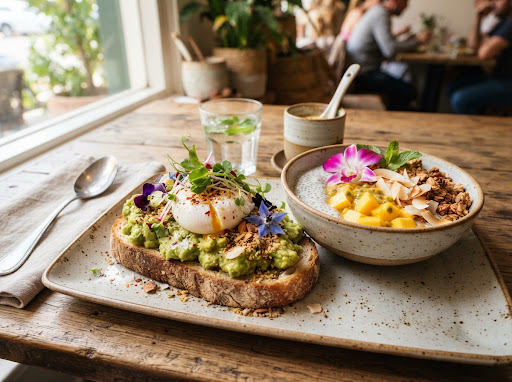
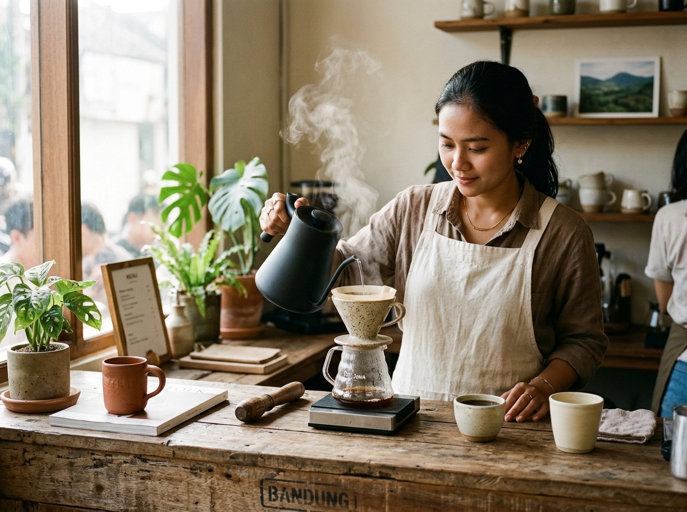
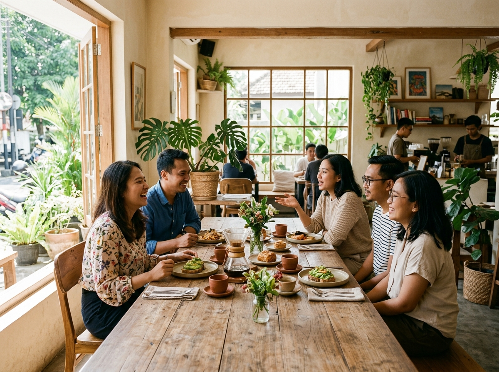
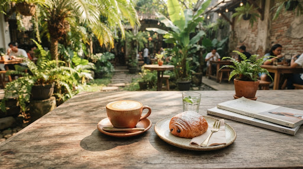

Good food. Good company. Every hour on Jalan Riau, Bandung.
SENJA
Bandung's Sanctuary of Golden Light.
Single-origin Priangan coffees, 36-hour wild hearth sourdough, and shared courtyard tables where no one is rushed.
The hours between work and home.
A calm Third Place where the chairs are comfortable, the sunlight is generous, and nobody is ever hurried out the door.
Tucked behind the historic brickwork of Jalan Riau in Citarum, SENJA brings together two everyday ceremonies: carefully extracted West Java coffees and honest hearth baking. We open at seven in the morning for your first quiet pour-over and stay open past dusk as the courtyard air cools.
Everything is made with patience. Our wild sourdough ferments cold for 36 hours before meeting the wood fire. Our beans come from smallholder farms across Priangan highlands. When you sit at our tables, there is room to think, converse, and slow down.

Limewash arches and terracotta floor tiles in our conservatory garden reading nook.
From the Hearth & Brew Bar
Crafted fresh each day using single-origin Indonesian beans and West Java seasonal produce.

Wild Sourdough Avocado Tartine
Rp 62.000Stoneground 36-hour wild sourdough toast, crushed ripe Lembang avocado, soft-poached pasture egg, and house toasted Egyptian dukkah seed spice.

Toraja Sapan Single-Origin Kalita
Rp 38.000Slow manual extraction over ceramic Kalita Wave. Bright wild honey sweetness, ripe peach blossom fragrance, and clean bergamot tea finish.
Three Moments, One Continuous Rhythm
SENJA moves with the sun rather than the clock. Here is how our space feels across the hours.
Morning Light & Quiet Pours
Gentle courtyard breezes, cool Priangan mountain air, and fresh loaves emerging from the wood fire. The ideal window for notebooks and early focus.
Toraja Filter & Pandan Kaya Brioche
Shared Tables & Hearth Meals
Bustling garden terrace, crisp smoked brisket toasties, hand-crushed sambal matah, and cold cascara spritzers enjoyed around communal teak tables.
Smoked Brisket Toastie & Cascara Tonic
Senja Dusk & Twilight Pastry
Bandung's amber sunset glow softens into candlelight. Wood-fired vegetables, botanical brews, and warm Earl Grey Basque cake slices as the night sets in.
Earl Grey Basque & Ginger Tisane
A Frame for Everyday Life
From the clay of our cups to the gravel underfoot, every surface is meant to ground you.


Quiet moments in the garden breeze with a warm flat white and a morning journal.
Good Things Are Happening Here.
We host Sunday Slow Brunches, monthly morning coffee cuppings at the brew bar, and intimate twilight hearth dinners.
Visit Our Sanctuary
Walk-ins are welcomed seven days a week.
Jalan Riau (LLRE Martadinata) No. 84
Citarum, Bandung 40115, West Java
Mon – Thu: 07:00 AM – 21:00 PM
Fri – Sun: 07:00 AM – 22:00 PM